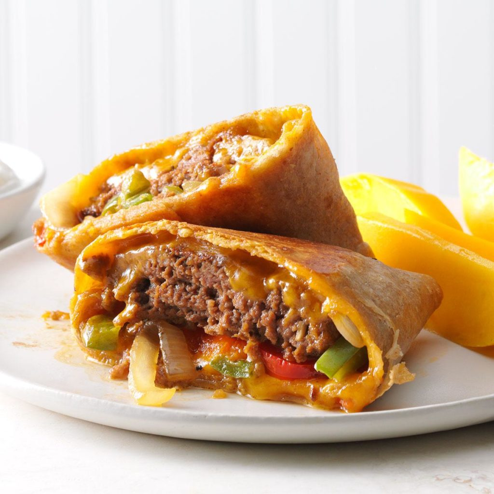

Fajita Burger Wraps
Ingredients
1 pound lean ground beef (90% lean)
2 tablespoons fajita seasoning mix
2 teaspoons canola oil
1 medium green pepper, cut into thin strips
1 medium red sweet pepper, cut into thin strips
1 medium onion, halved and sliced
4 flour tortillas (10 inches)
3/4 cup shredded cheddar cheese
Directions
- In a large bowl, combine beef and seasoning mix, mixing lightly but thoroughly. Shape into four 1/2-in.-thick patties.
- In a large skillet, heat oil over medium heat. Add burgers; cook 4 minutes on each side. Remove from pan. In same skillet, add peppers and onion; cook and stir 5-7 minutes or until lightly browned and tender.
- On the center of each tortilla, place 1/2 cup pepper mixture, one burger and 3 tablespoons cheese. Fold sides of tortilla over burger; fold top and bottom to close, forming a square.
- Wipe skillet clean. Place wraps in skillet, seam side down. Cook on medium heat 1-2 minutes on each side or until golden brown and a thermometer inserted in beef reads 160°.
Nutrition Facts
1 wrap: 533 calories, 23g fat (9g saturated fat), 92mg cholesterol, 1190mg sodium, 45g carbohydrate (5g sugars, 3g fiber), 34g protein.
Total Time
Prep/Total Time: 30 min.